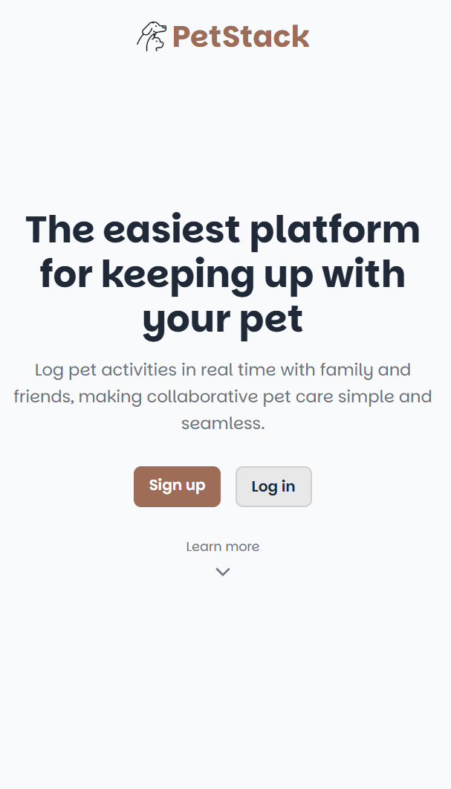
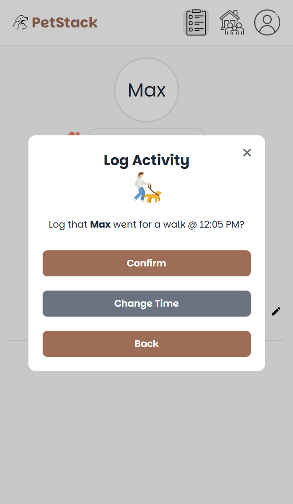

Home Screen
Summary
PetStack is a mobile-focused web app that helps families, roommates, or pet sitters track their pet's daily care through a shared activity log. It was built to solve a common household problem — keeping everyone on the same page about what's been done and what hasn't, without any back and forth.
The design goal was straightforward: build something a person could pick up and immediately understand, with no learning curve. Beyond solving the problem itself, PetStack was also a deliberate effort to go deeper with Spring Boot and build a larger-scale Java project using tools, techniques, and design patterns found in professional environments.
Technical Stack
- Java 21 / Spring Boot: Spring MVC, Spring Security, Spring Data JPA
- HTML5, CSS3, JavaScript: vanilla frontend using ES6 modules
- PostgreSQL / Supabase: relational database and hosted storage
- JWT / BCrypt: stateless authentication with hashed passwords
- Docker: containerized for local development
- Render: cloud deployment platform
How It Works
PetStack follows a standard layered Spring Boot architecture: Controller → Service → Repository → Entity → Database. Controllers handle HTTP requests and delegate to services, which contain all business logic. Repositories extend JpaRepository for built-in CRUD and custom queries. A DTO layer ensures sensitive fields like password hashes are never exposed in API responses.
Every authenticated request includes a JWT in the Authorization header. A custom filter intercepts each request, validates the token, and sets the security context so controllers can access the current user directly. The database consists of five related tables: User, Household, HouseholdMember, Pet, and Activity.
Challenges & Accomplishments
Accomplishments
- Built and deployed a full-stack application independently, from backend to frontend to cloud hosting
- Implemented JWT authentication and a custom Spring Security filter from scratch
- Designed a clean relational schema with proper relationships and cascade rules
- Built something practical enough that my own family uses it as a daily tool
Challenges
- Designing the HouseholdMember join table with a composite primary key to enforce membership constraints while also storing per-membership data
- Keeping the frontend lightweight with vanilla JavaScript while still supporting dynamic views and ES6 module structure without a build tool